This function plots the estimated potential cumulative incidence functions or treatment effect curve with pointwise confidence intervals.
Arguments
- x
A fitted object returned by the function
surv.tteICEorscr.tteICE.- type
Which plot to create:
ateindicates to plot the estimated treatment effect;incindicates to plot the estimated cumulative incidence function.- decrease
A logical variable indicating the type of curve to display. If
decrease = FALSE(default), the function displays the cumulative incidence functions (CIFs) or their differences. Ifdecrease = TRUE, the function instead displays the survival functions or their differences.- conf.int
Confidence level for the interval. If
conf.int = NULL, no confidence interval is provided.- xlab
Label for x-axis.
- xlim
A numeric vector of length 2 giving the limits of the x-axis. If
xlim=NULL(default), the range is determined automatically from the data.- ylim
A numeric vector of length 2 giving the limits of the y-axis. If
ylim=NULL(default), the range is determined automatically by the type of plot- plot.configs
A named
listof additional plot configurations. See details in functionsplot_ateandplot_inc- ...
Other augments in function
plot.defaultor functioncurve
Examples
## load data
data(bmt)
bmt = transform(bmt, d4=d2+d3)
A = as.numeric(bmt$group>1)
## plot cumulative incidence functions with p-values
for (st in c('composite','natural','removed','whileon','principal')){
fit = surv.tteICE(A, bmt$t2, bmt$d4, st)
plot(fit, type="inc", decrease=TRUE, ylim=c(0,1),
plot.configs=list(show.p.value=TRUE))
}
 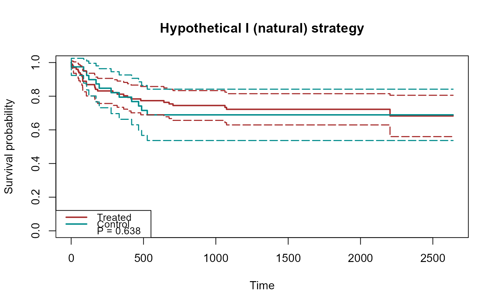
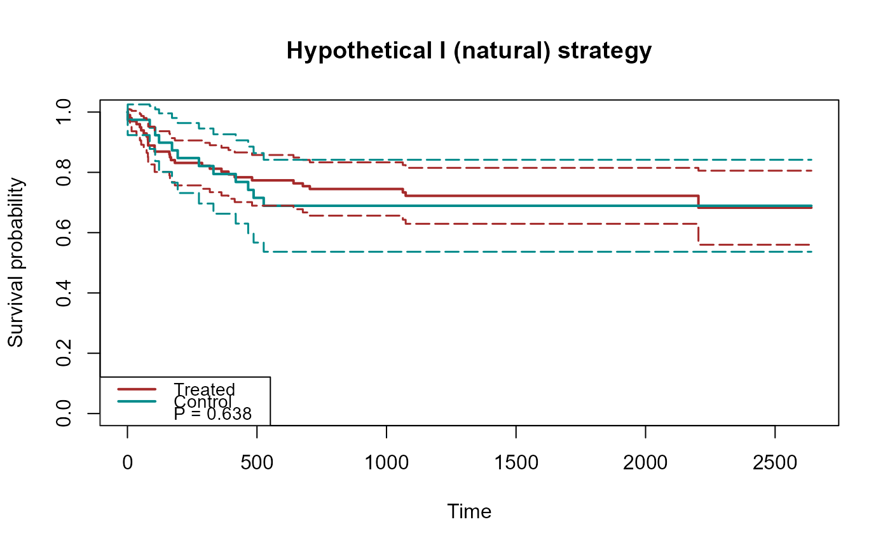
 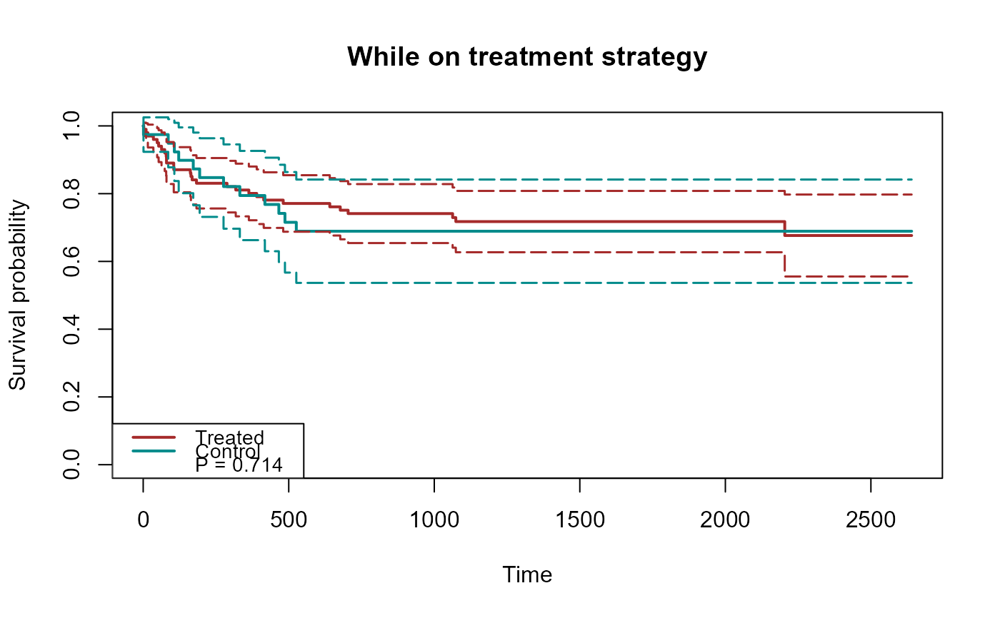
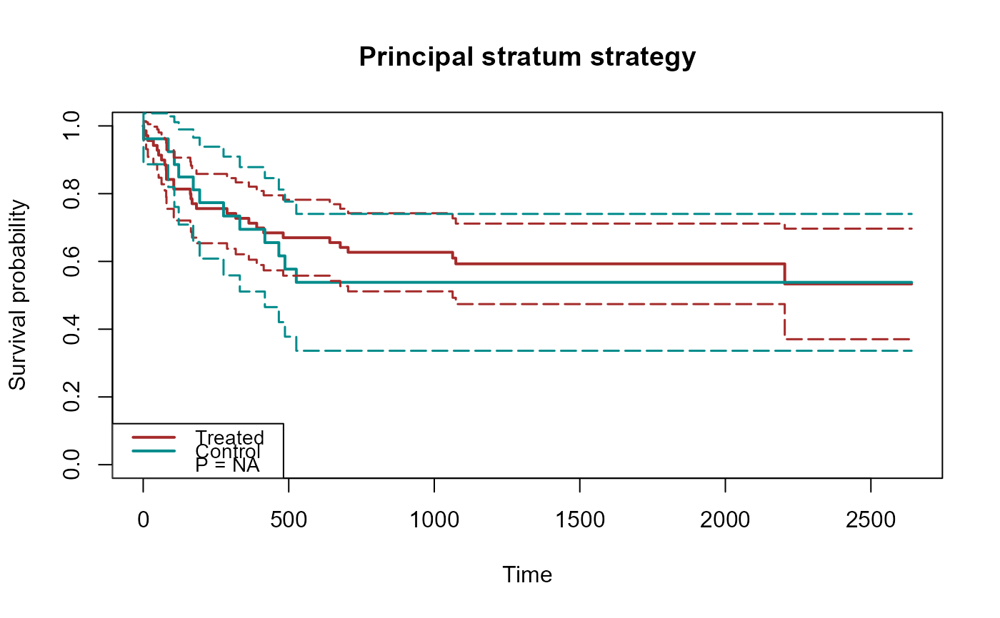
## plot treatment effects for semicompeting risk data
for (st in c('composite','natural','removed','whileon','principal')){
fit = scr.tteICE(A, bmt$t1, bmt$d1, bmt$t2, bmt$d2, st)
plot(fit, type="ate", ylim=c(-1,1), xlab="time",
plot.configs=list(col="red"))
}
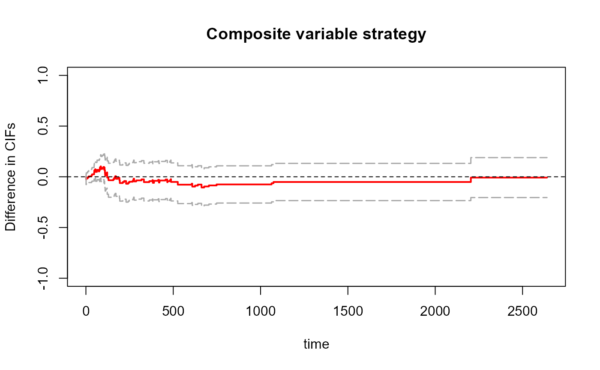
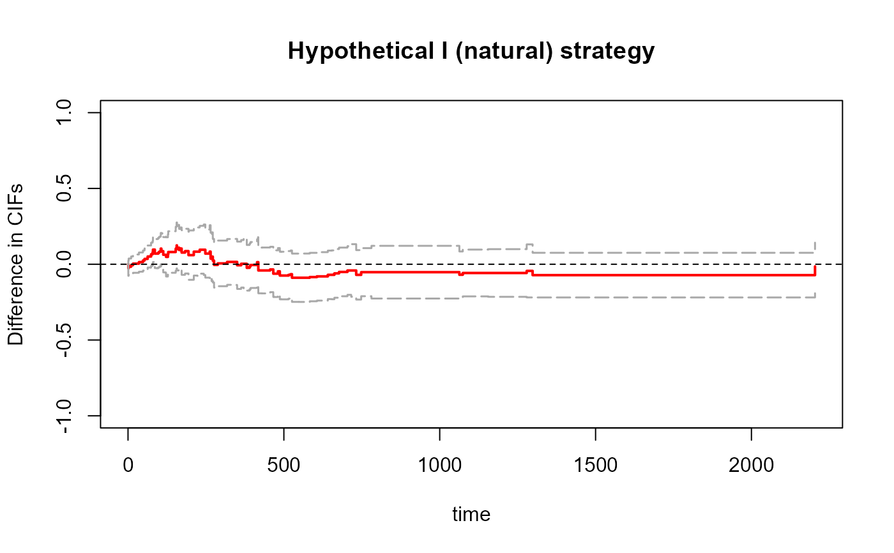
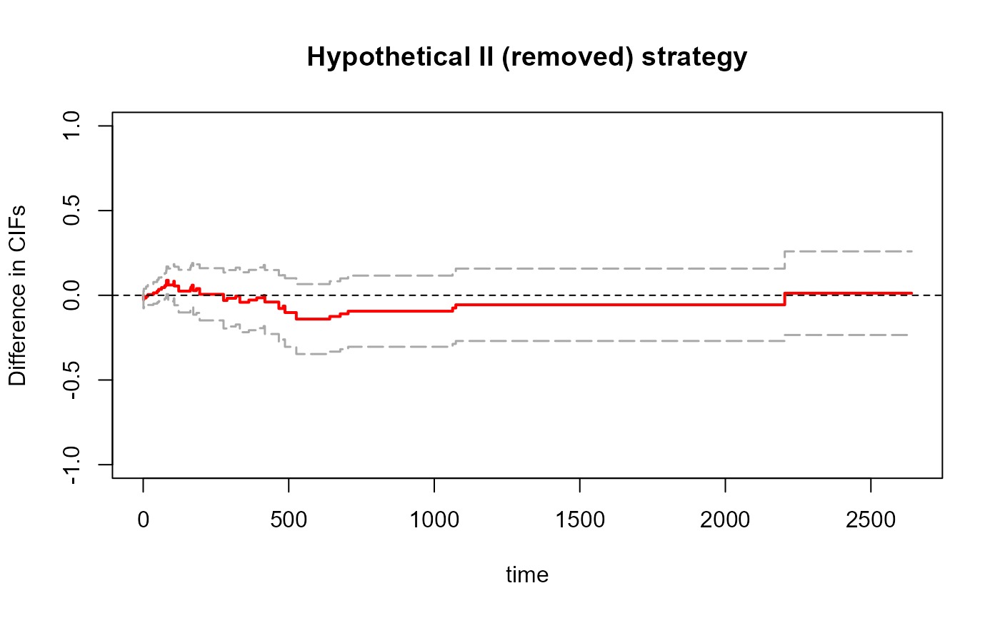
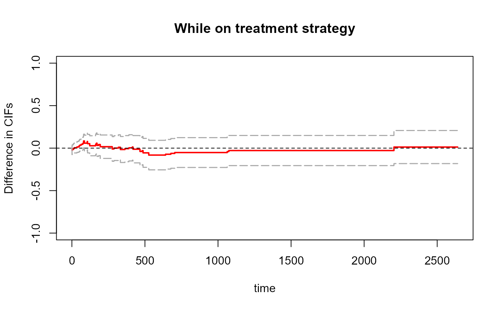
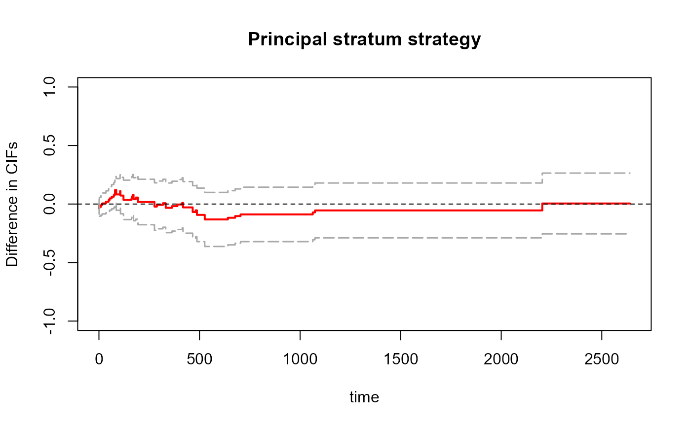
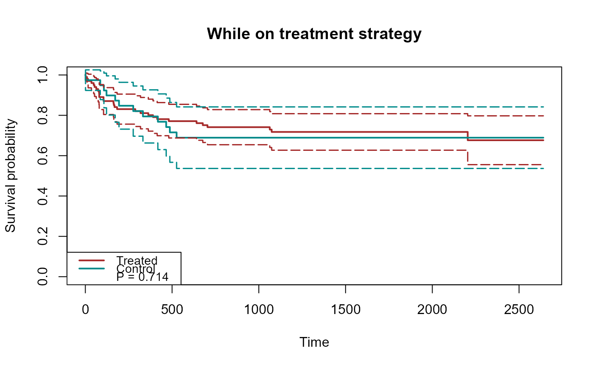
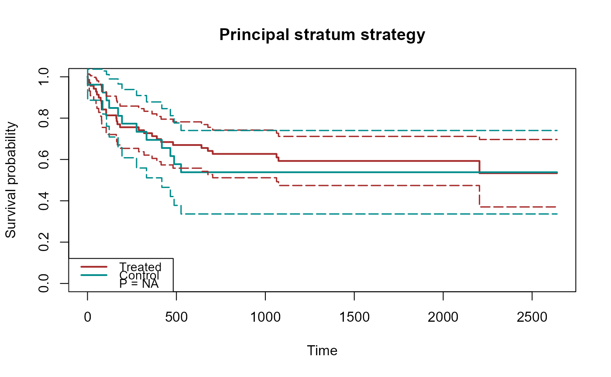
## plot treatment effects for semicompeting risk data
for (st in c('composite','natural','removed','whileon','principal')){
fit = scr.tteICE(A, bmt$t1, bmt$d1, bmt$t2, bmt$d2, st)
plot(fit, type="ate", ylim=c(-1,1), xlab="time",
plot.configs=list(col="red"))
}
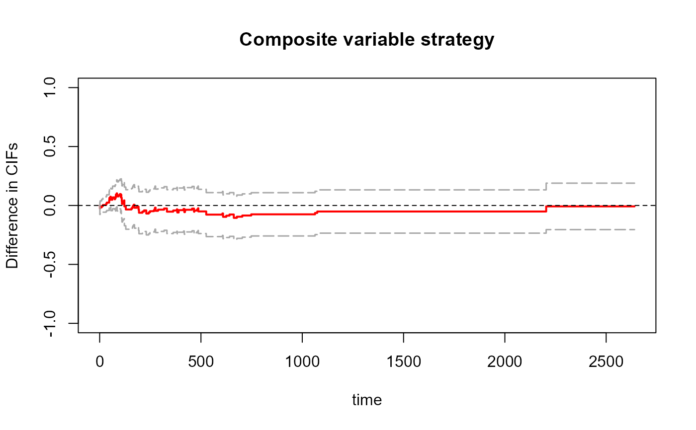
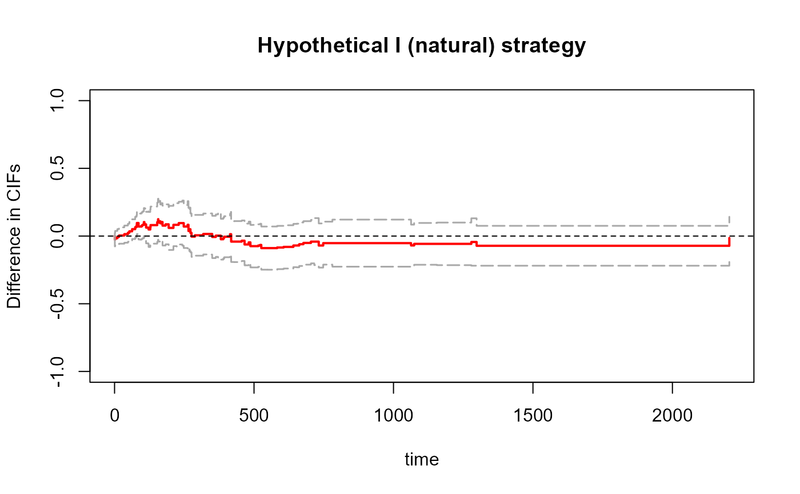
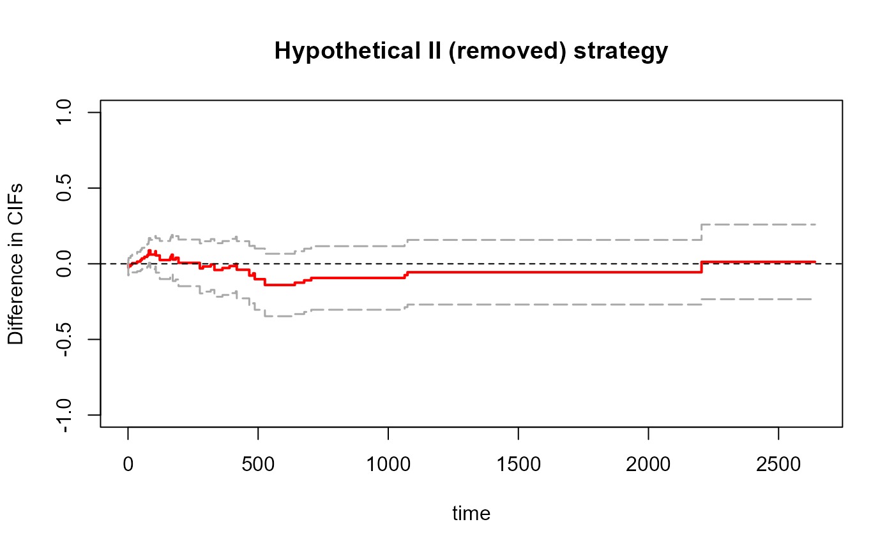
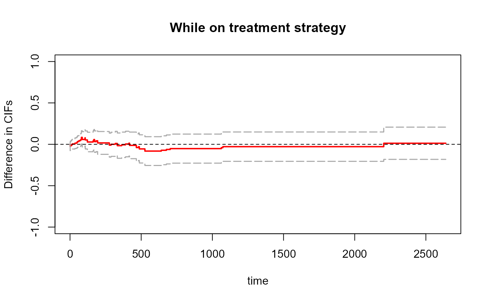
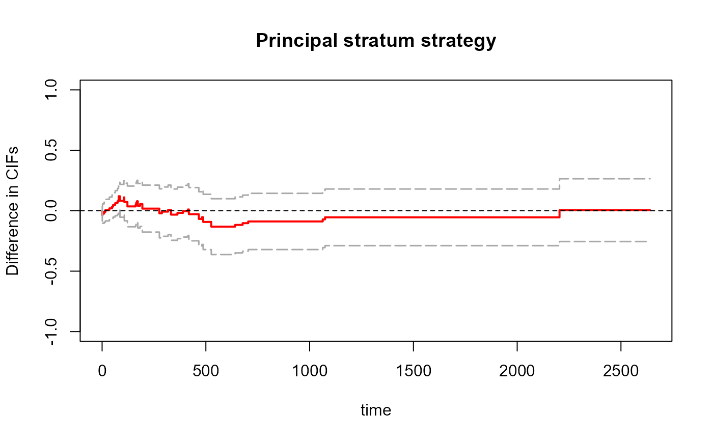